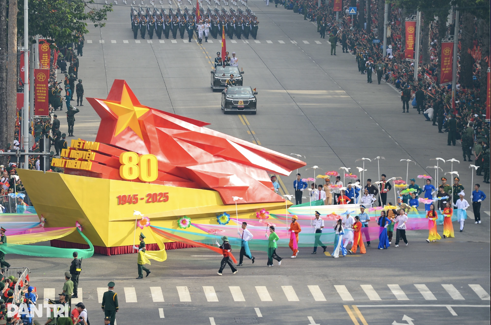
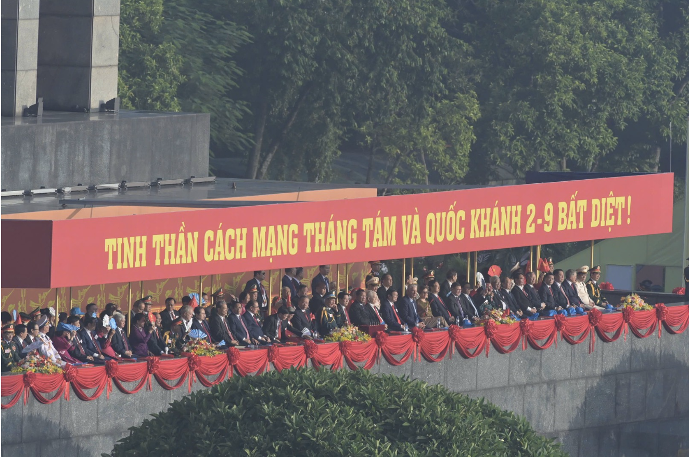
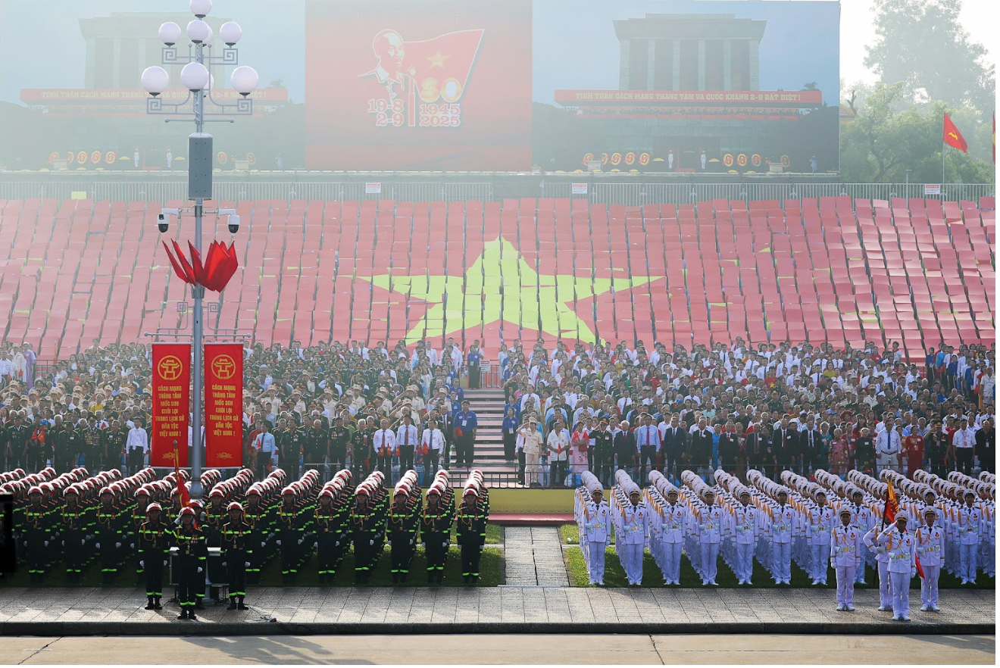
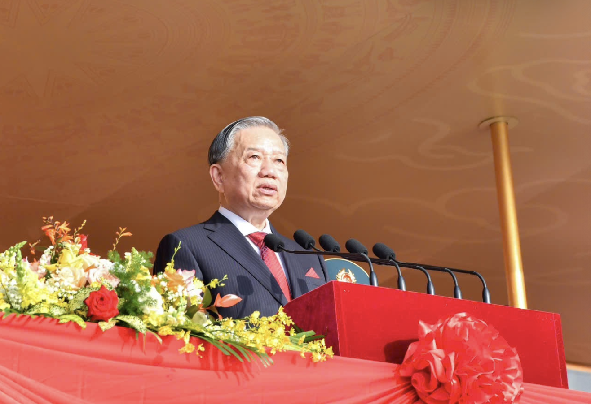
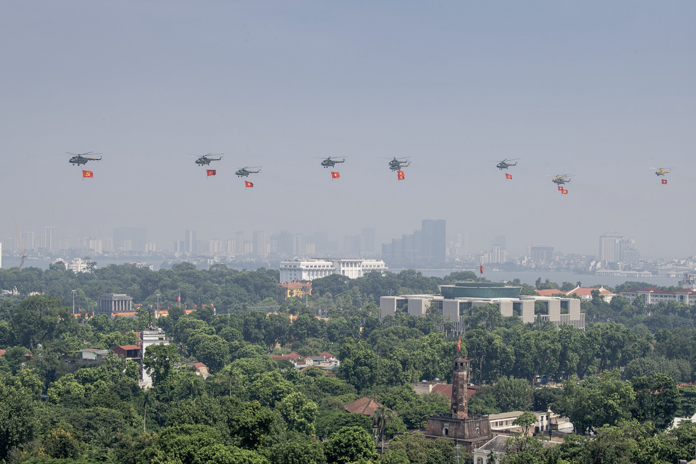
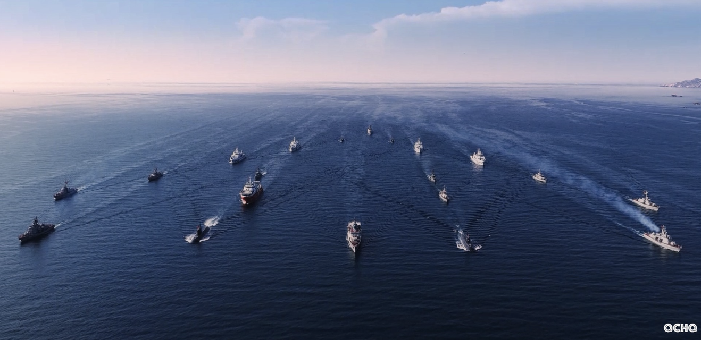
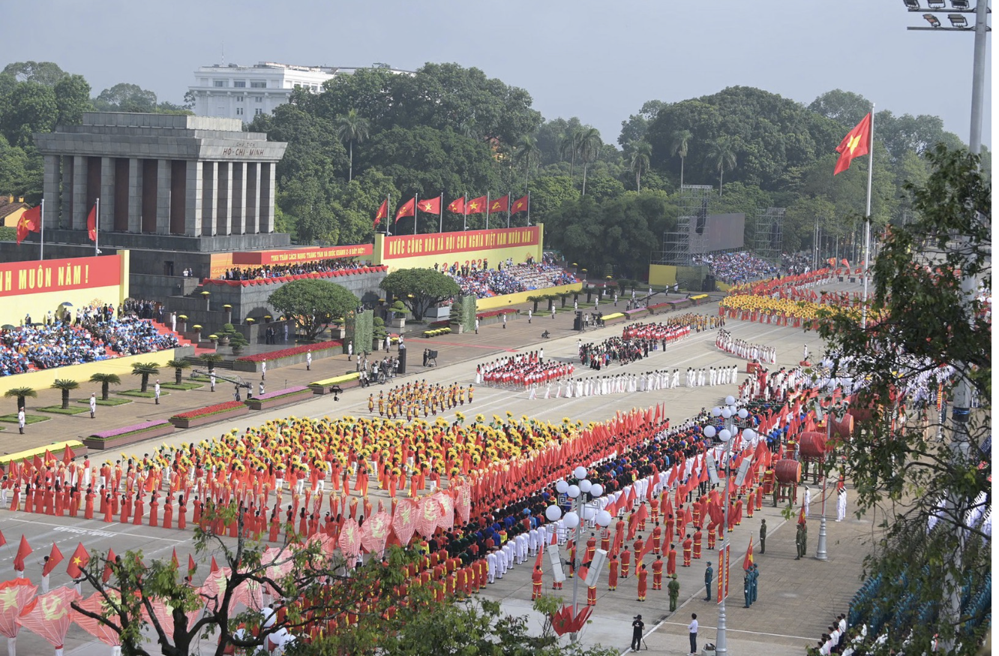

Kỷ niệm trọng thể 80 năm Cách mạng Tháng Tám thành công và Quốc khánh 2/9
Sáng nay, 2/9/2025, tại Quảng trường Ba Đình, Ban Chấp hành Trung ương Đảng, Quốc hội, Chủ tịch nước, Chính phủ, Ủy ban Trung ương Mặt trận Tổ quốc Việt Nam và thành phố Hà Nội tổ chức trọng thể Lễ kỷ niệm, diễu binh, diễu hành 80 năm Cách mạng Tháng Tám thành công và Quốc khánh nước Cộng hòa xã hội chủ nghĩa Việt Nam.
Lễ diễu hành kỷ niệm 80 năm ngày Quốc Khánh 2-9
Dự Lễ kỷ niệm có các đồng chí: Tổng Bí thư Tô Lâm; nguyên Tổng Bí thư Nông Đức Mạnh; Chủ tịch nước Lương Cường; các nguyên Chủ tịch nước: Nguyễn Minh Triết, Trương Tấn Sang; Thủ tướng Chính phủ Phạm Minh Chính; nguyên Thủ tướng Chính phủ Nguyễn Tấn Dũng; Chủ tịch Quốc hội Trần Thanh Mẫn; các nguyên Chủ tịch Quốc hội: Nguyễn Sinh Hùng, Nguyễn Thị Kim Ngân; Ủy viên Bộ Chính trị, Thường trực Ban Bí thư Trần Cẩm Tú, Trưởng Ban Chỉ đạo Trung ương kỷ niệm các ngày lễ lớn và sự kiện lịch sử quan trọng của đất nước; Phạm Thế Duyệt, nguyên Ủy viên Thường trực Bộ Chính trị, nguyên Chủ tịch Ủy ban Trung ương Mặt trận Tổ quốc Việt Nam; các nguyên Ủy viên Bộ Chính trị, nguyên Thường trực Ban Bí thư: Phan Diễn, Lê Hồng Anh, Trần Quốc Vượng; Ủy viên Bộ Chính trị, Bí thư Trung ương Đảng, Chủ tịch Ủy ban Trung ương Mặt trận Tổ quốc Việt Nam Đỗ Văn Chiến...
Các đồng chí lãnh đạo Đảng, Nhà nước, Quốc hội, Chính phủ, Mặt trận Tổ quốc Việt Nam và các đại biểu dự Lễ kỷ niệm.
Sau phần Lễ của Nhà nước (gồm nghi thức rước đuốc thắp sáng đài lửa truyền thống cách mạng và lễ Chào cờ) và Diễn văn kỷ niệm của Tổng Bí thư Tô Lâm, chương trình diễu binh, diễu hành diễn ra với sự tham gia của 6 lực lượng với hơn 30 nghìn người.
Nghi thức chào cờ trang trọng tại Quảng trường Ba Đình sáng 2/9.
Đồng chí Tô Lâm, Tổng Bí thư Ban Chấp hành Trung ương Đảng Cộng sản Việt Nam, đọc Diễn văn “Kỷ niệm 80 năm Cách mạng Tháng Tám thành công (19/8/1945 - 19/8/2025) và Quốc khánh nước Cộng hòa xã hội chủ nghĩa Việt Nam (2/9/1945 - 2/9/2025)”.
Trong đó, lực lượng diễu binh, diễu hành gồm 4 khối Nghi trượng; 43 khối đại diện lực lượng vũ trang nhân dân (26 khối quân đội, 17 khối công an); 4 khối quân đội nước ngoài, gồm: Trung Quốc, Nga, Lào, Campuchia; lực lượng xe, pháo quân sự, xe đặc chủng công an; lực lượng diễu binh trên biển; 12 khối diễu hành quần chúng; 1 khối Văn hóa - Thể thao.
Biên đội trực thăng Mi-171, Mi-17, Mi-8, mang cờ Đảng, cờ Tổ quốc tung bay trên Quảng trường Ba Đình lịch sử.
Mở đầu chương trình diễu binh, diễu hành là màn không quân bay chào mừng, tiếp đến là phần diễu binh, diễu hành của các khối theo thứ tự: diễu hành của các khối nghi trượng, diễu binh của các khối đi bộ, các khối Quân đội nhân dân Việt Nam trước, các khối quân đội nước ngoài (Trung Quốc, Nga, Lào, Campuchia), rồi đến khối dân quân, du kích, các khối công an.
Các lực lượng vũ trang thực hiện lễ diễu binh trên biển.
Qua sóng truyền hình, người dân cả nước cũng sẽ lần đầu tiên được chứng kiến diễu binh trên biển được tổ chức tại tỉnh Khánh Hòa.
Sau diễu binh, diễu hành của khối đi bộ sẽ đến phần diễu binh của khối xe pháo quân sự, xe đặc chủng công an và các khối quần chúng. Phần cuối là chương trình nghệ thuật quy tụ 80 nghệ sĩ tiêu biểu từ mọi miền Tổ quốc.
Chương trình nghệ thuật chào mừng “Lễ Kỷ niệm, diễu binh, diễu hành 80 năm Cách mạng Tháng Tám thành công (19/8/1945 - 19/8/2025) và Quốc khánh nước Cộng hòa xã hội chủ nghĩa Việt Nam (2/9/1945 - 2/9/2025)”.
Sau khi đi qua lễ đài ở Quảng trường Ba Đình, các khối diễu binh, diễu hành sẽ tỏa ra các tuyến phố trung tâm của Thủ đô Hà Nội...